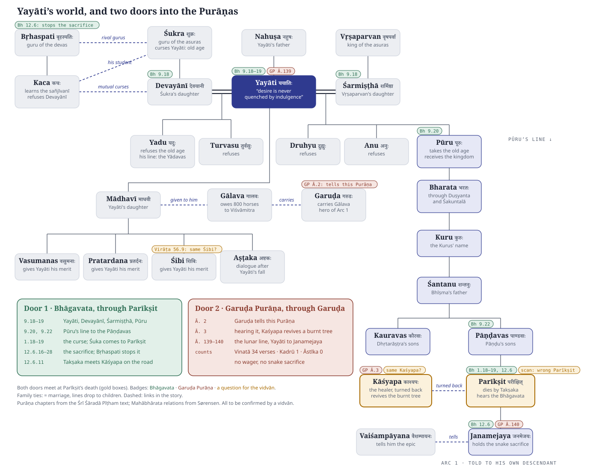
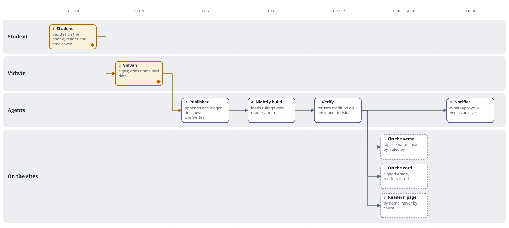

Say "Yayāti", and agents light up everyone tied to him: his gurus, his queens, his sons, his daughter, and Pūru's line down to Parīkṣit and Janamejaya. From there, two doors lead into the Purāṇas. This page shows that map, then what happens to it as work arrives. Agents run the loop. Students, junior vidvāns and a senior vidvān make every judgement.
dharmasastra-gcp/workbench/docs/DESIGN-scholar-workbench-2026-08-21.md. This page adds one layer: agents that run the coordination the note says no software settles. Where the two differ, the note wins.The relations come from Sørensen's index, already in the corpus as son of, spouse of, daughter of. So the agent does not guess who belongs together; it reads it. The badges show where the same people stand in the Bhāgavata and the Garuḍa Purāṇa, found by reading the chapter headings of the Śrī Śāradā Pīṭham text.

namakosa/map.py in the pitch repository.The whole of Arcs 1 and 2 in one Purāṇa: Yayāti in 9.18–19, Pūru's line in 9.20 and 9.22, the curse in 1.18, Śuka's coming in 1.19, and the snake sacrifice in 12.6. The frame mirrors the epic's: the father hears the Bhāgavata waiting for Takṣaka; the son hears the Mahābhārata at the sacrifice held to avenge him.
Not a retelling of the wager. Kadrū appears once, Āstīka and the sacrifice not at all. Garuḍa is the one who tells this Purāṇa (Ācārakāṇḍa 2). But Ācārakāṇḍa 3 is headed यच्छ्रवणात् कश्यपो दग्धं वृक्षमजीवयत्: by hearing it, Kaśyapa revived a burnt tree. That is the tree Takṣaka burns on his way to Parīkṣit. Both doors meet at his death.
Counts on the map are string matches, not people: पूरु also matches पूरुष, and गरुड matches every mention of Viṣṇu's mount. Chapter numbers for the Mahābhārata are the plan's working references, from Dutt.
This is the dossier of the design note's §6, made per circle instead of per headword: the graded shortlist, the corpus's own chapter headings, who else stands where he stands, and the frontier where evidence stops.
Every item starts with a look at what the index already holds, so no one rereads a verse that is settled, and no one trusts a link just because it exists. This is what that look finds today for the 27 people on the map (the Kauravas and Pāṇḍavas are groups), measured in the corpus database.
Scholar-adjudicated rulings on anyone in the circle. The index holds 308 such rulings in all (616 rows, each a +1 on the person who stands and a −1 on the rival), none of them here yet.
Pairs of people on the map already linked by a recorded relation, from Sørensen. Yayāti alone has 220 verse-level citations from the Gītā Press index and 178 verses resolved through Dutt's translation. A junior vidvān can confirm these from a list.
Purāṇa verses containing Yayāti's name. The scan linked none of them to him. Only this pile needs fresh reading.
Both tellings belong to the tradition, so the card shows each beside the other and never calls one "not in the original". Highlighted rows are where they differ. Each line is to be checked by a vidvān before it is shown.
| Mahābhārata, told to Janamejaya | Bhāgavata, told to Parīkṣit | |
|---|---|---|
| The curse | Out hunting, he hangs a dead snake on the silent sage Śamīka. Śamīka's son Śṛṅgin curses him to die by Takṣaka within seven days.Ādi 40–44 | The same insult, and the same curse: तक्षकः सप्तमेऽहनि दङ्क्ष्यति.1.18, verse 37 |
| The seven days | He shuts himself in a palace raised on a single pillar, guarded by physicians and mantras.Ādi 40–44 | He gives up the kingdom and sits fasting on the bank of the Gaṅgā. Śuka arrives and tells him the Bhāgavata.1.19, verse 7; 12.6.10 |
| Kāśyapa | The healer, on his way to save the king, revives a tree Takṣaka has burnt. Takṣaka pays him to turn back.Ādi 40–44 | Takṣaka meets Kāśyapa on the road and turns him back with wealth: ददर्श पथि काश्यपम्.12.6.11–12 |
| The death | Takṣaka hides as a tiny insect in fruit that nāgas, disguised as ascetics, bring to the king.Ādi 40–44 | Takṣaka comes disguised as a brāhmaṇa. The king, already ब्रह्मभूत, has said he does not fear death.12.6.5, 12.6.12–13 |
| The sacrifice stops | Āstīka, a boy, asks the king for a boon and halts it.Ādi 54–58 | Takṣaka hides with Indra. Bṛhaspati, Kaca's father on the map, persuades the king to stop.12.6.16–28 |
| Who hears what | Vaiśampāyana tells the whole epic to Janamejaya.Ādi 59–60 | Śuka tells the Bhāgavata to Parīkṣit, in his last seven days.1.19 |
Lighting Yayāti's circle is a request. The scan has already made a mistake on Parīkṣit, which is a correction. The Garuḍa Purāṇa's burnt tree is a link waiting to be ruled. Pick one to see who does what.
Read left to right. Rows are who acts; columns are where the work is. Gold boxes with a diamond are a person's decision; arrows show where the work branches and joins.
| Kind of candidate | Verses | How a student meets it |
|---|---|---|
| In a chapter where his circle also appears | 168 | Read in order, as a story |
| In a chapter headed वंश, a genealogy | 22 | Quick check |
| A passing mention elsewhere | 285 | One verse at a time |
| Epithet only, नाहुष | 45 | Read closely: it may not be him |
| A place named after him | 2 | Probably another entry |
| All eighteen Purāṇas | 522 | Matsya 121, Padma 103, Skanda 66, Bhāgavata 45, Brahma 39, Brahmāṇḍa 38, the rest fewer |
These rules are a first pass. The Harivaṃśa pilot tunes them: the known-answer verses show whether the story tier really is mostly him.
Credit attaches to decisions. Every signed decision carries who read it and who ruled it, and the nightly build puts those names on the three pages the work lands on: the verse, the character's card, and the readers' page. Today the 308 scholar rulings in the corpus record only a batch, such as READ-KICAKA-P04, and not the people. That is the gap to close. The design note already promises the result: “a reader who signs 200 and stops keeps their name in the apparatus”.

{"address": "BHP:S09:C018:V018",
"form": "ययातिर्",
"entity": "inm:12607",
"polarity": 1,
"kind": "stands",
"read_by": ["r:017", "r:042"],
"ruled_by": "v:003",
"signed": "2026-11-14",
"batch": "READ-YAYATI-BHP09",
"supersedes": null}
An example line. The ids point to a readers' register that holds names and consent.तस्यां गतायां स्वगृहं ययातिर्मृगयां चरन् ।
प्राप्तो यदृच्छया कूपे जलार्थी तां ददर्श ह ॥
Tap the name in the verse. The credit sits in this note, one tap away; nothing is printed on the mūla itself.
| signed by a vidvān | Purāṇa verses, each with its readers |
| Gītā Press index | 220 verses |
| Sørensen | 67 chapters |
| Dutt's translation | 178 verses |
| Scan, unread | not shown as his |
His Purāṇa verses were read by 6 students and ruled by 2 vidvāns. See who →
Listed by name, not by count, each with links to every verse they read. Like the readers named in Sørensen's and the OED's prefaces.
Each is a Claude Code run in its own sandbox, started by an event (a pin, a vote, an upload, a signed decision) or by the clock. None of them holds a pen on the index itself. They write to the queue and the report; only signed decisions reach the ledger.
The scholar-workbench note ends with a list it calls neither software nor solvable by it. Each item is coordination, not judgement. An agent can do the running; a named person still owns the rule.
| From the note | What the agent does | What a person still owns |
|---|---|---|
| Who assigns the work | Dispatcher hands out batches by calibration score, script and language, keeps two readers per verse, never gives a reader their own earlier verse to re-check. | The junior vidvān sets who is cleared to read which Purāṇa. |
| What happens when a reader stalls | Chaser sends a gentle reminder on WhatsApp after three days, and returns the batch to the pool after seven. Nothing is lost: work is saved verse by verse. | Nobody is dropped by an agent. A stall twice running goes to the junior vidvān as a note. |
| Who chases an unanswered escalation | Chaser keeps a clock on each escalation and resends it with the dossier on top, then lists it in the nightly report until it is ruled. | The senior vidvān rules, or says "cannot be determined", which is an answer too. |
| How a reader is calibrated, and checked again | Every batch carries a few verses with known rulings, hidden among the rest, and a few shown with no suggestion. The agent scores both, every week. | The junior vidvān reviews the scores and decides who goes live, who pauses, who reads with a partner. |
| The nightly report | Reporter writes it: decisions signed and by whom, headwords closed, escalations open, agreement between readers, how far the frontier moved. | The trustees read it. Students see their own names in it. |
The pilot is 16,100 verses and up to 4,034 headwords in 9 months for ₹37.5 lakh, at about 1,800 verses a month. Nearly all of that is reading time. If the loop is worth building for the full 351,225 verses, the pilot will show it in minutes, not opinions.